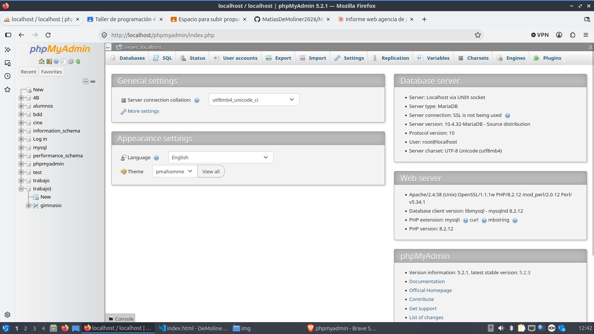

Página web para una agencia de representación de jugadores
Informe sobre las tecnologías que se usarán: HTML, CSS, PHP, MySQL y phpMyAdmin.
Introducción
Una agencia de representación de jugadores gestiona la carrera de futbolistas: negocia contratos, maneja transferencias y mantiene la relación con los clubes. Eso genera datos que cambian seguido, como fechas de vencimiento de contratos, cláusulas de rescisión, valores de mercado y comisiones.
El sitio tendrá una parte pública, que presenta a la agencia y a sus jugadores, y una parte privada para que el equipo cargue y consulte los datos. La parte privada se apoya en dos funciones centrales: un sistema de login, para que solo entre personal autorizado, y un CRUD de jugadores, para crear, ver, editar y eliminar registros.
Problema que resuelve
Muchas agencias llevan la información de sus jugadores en planillas sueltas, mensajes y papeles. Eso hace difícil saber a tiempo qué contratos están por vencer, quién representa a cada jugador o cuánto se cobra de comisión. Un sistema web centraliza todo en un solo lugar, ordenado y accesible desde cualquier dispositivo.
Objetivos
- Presentar a la agencia y a sus jugadores en una página pública.
- Proteger la información interna con un sistema de login.
- Permitir cargar, consultar, modificar y eliminar datos con un CRUD.
- Guardar todo en una base de datos MySQL administrada con phpMyAdmin.
Usuarios del sistema
- Visitantes: clubes, familias y jugadores interesados que ven la parte pública.
- Representantes: el personal de la agencia, que inicia sesión y gestiona los datos.
| Tecnología | Para qué se usa en la agencia |
|---|---|
| HTML | Estructura de las páginas y formularios. |
| CSS | Colores, tipografía y diseño visual. |
| PHP | Lógica del servidor: login, altas y consultas. |
| MySQL | Guarda jugadores, clubes y contratos. |
| phpMyAdmin | Panel para administrar la base de datos. |
HTML
HTML define el contenido de la página: títulos, textos, imágenes y formularios. Ejemplo de la ficha de un jugador:
<article class="jugador">
<img src="img/lucas.jpg" alt="Lucas Benítez">
<h3>Lucas Benítez</h3>
<p>Delantero · Club Atlético Ejemplo</p>
</article>CSS
CSS define cómo se ve la página. Se puede escribir dentro del mismo archivo, en una etiqueta style, como en este informe. Se usan variables para los colores y una cuadrícula que acomoda las fichas de los jugadores según el ancho de la pantalla, así el sitio se ve bien en celular y en computadora.
:root { --acento: #4a6b5d; }
.plantel {
display: grid;
grid-template-columns: repeat(auto-fill, minmax(220px, 1fr));
gap: 16px;
}
.jugador { border: 1px solid #dcdedb; padding: 12px; }
.jugador h3 { color: var(--acento); }MySQL
MySQL guarda la información en tablas relacionadas entre sí. Para la agencia alcanzan tres: clubes, jugadores y contratos.
CREATE DATABASE agencia;
USE agencia;
CREATE TABLE clubes (
id_club INT AUTO_INCREMENT PRIMARY KEY,
nombre VARCHAR(100) NOT NULL,
pais VARCHAR(60)
);
CREATE TABLE jugadores (
id_jugador INT AUTO_INCREMENT PRIMARY KEY,
nombre VARCHAR(60) NOT NULL,
apellido VARCHAR(60) NOT NULL,
posicion VARCHAR(30),
valor_mercado DECIMAL(12,2),
id_club INT,
FOREIGN KEY (id_club) REFERENCES clubes(id_club)
);
CREATE TABLE contratos (
id_contrato INT AUTO_INCREMENT PRIMARY KEY,
id_jugador INT NOT NULL,
fecha_fin DATE NOT NULL,
clausula_rescision DECIMAL(12,2),
comision DECIMAL(4,2) DEFAULT 5.00,
FOREIGN KEY (id_jugador) REFERENCES jugadores(id_jugador)
);
CREATE TABLE usuarios (
id_usuario INT AUTO_INCREMENT PRIMARY KEY,
email VARCHAR(120) NOT NULL UNIQUE,
clave_hash VARCHAR(255) NOT NULL
);La tabla usuarios guarda a los representantes que pueden entrar al panel. La contraseña nunca se guarda en texto plano, solo su hash.
phpMyAdmin
phpMyAdmin es una aplicación web que permite administrar MySQL desde el navegador, sin usar comandos. Viene incluida en XAMPP y se abre en http://localhost/phpmyadmin. En el proyecto se usa para:
- Crear la base de datos y las tablas, o importar el archivo SQL.
- Cargar jugadores de prueba y revisar los datos.
- Hacer copias de seguridad de la base.

PHP
PHP corre en el servidor: se conecta a MySQL, lee los datos y arma la página que ve el usuario. Se recomienda usar PDO, que permite consultas seguras.
<?php
$pdo = new PDO("mysql:host=localhost;dbname=agencia;charset=utf8mb4", "root", "");
$jugadores = $pdo->query("SELECT nombre, apellido, posicion FROM jugadores")
->fetchAll(PDO::FETCH_ASSOC);
foreach ($jugadores as $j) {
echo "<p>" . htmlspecialchars($j['nombre'] . " " . $j['apellido']) . "</p>";
}Para el panel privado se usa session_start() para el inicio de sesión, y las contraseñas se guardan con password_hash().
Sistema de login
Un sistema de login (inicio de sesión) controla quién puede entrar a la parte privada del sitio. En la agencia, solo los representantes registrados pueden ver y modificar los datos de jugadores y contratos; el público general ve únicamente la parte pública.
Cómo funciona
- El usuario escribe su correo y su contraseña en un formulario HTML.
- PHP busca ese correo en la tabla
usuariosde MySQL. - Compara la contraseña ingresada con el hash guardado, usando
password_verify(). - Si coincide, guarda al usuario en la sesión (
$_SESSION) y lo deja pasar al panel. - Cada página privada revisa la sesión al comienzo; si no hay sesión iniciada, redirige al login.
- Al cerrar sesión, se destruye la sesión con
session_destroy().
Ejemplo de verificación
<?php
session_start();
// ... se busca al usuario por su email en la base ...
if ($usuario && password_verify($_POST['clave'], $usuario['clave_hash'])) {
$_SESSION['id_usuario'] = $usuario['id_usuario'];
header('Location: panel.php');
} else {
echo 'Correo o contraseña incorrectos.';
}Para proteger una página privada alcanza con poner esto al principio:
<?php
session_start();
if (!isset($_SESSION['id_usuario'])) {
header('Location: login.php');
exit;
}CRUD
CRUD son las siglas de las cuatro operaciones básicas que se hacen sobre los datos: Create (crear), Read (leer), Update (actualizar) y Delete (eliminar). Es la base de casi cualquier sistema que maneja información. En la agencia, el CRUD se aplica a los jugadores, y de la misma forma a los clubes y a los contratos.
| Operación | Consulta SQL | Qué hace en la agencia |
|---|---|---|
| Crear | INSERT | Dar de alta un jugador nuevo. |
| Leer | SELECT | Ver el listado o la ficha de un jugador. |
| Actualizar | UPDATE | Cambiar el club o el valor de mercado. |
| Eliminar | DELETE | Borrar un jugador que ya no se representa. |
Ejemplos con PHP y MySQL
Las cuatro operaciones usan consultas preparadas, que evitan la inyección SQL:
// Crear
$stmt = $pdo->prepare("INSERT INTO jugadores (nombre, apellido, posicion) VALUES (?, ?, ?)");
$stmt->execute([$nombre, $apellido, $posicion]);
// Leer
$jugadores = $pdo->query("SELECT * FROM jugadores")->fetchAll();
// Actualizar
$stmt = $pdo->prepare("UPDATE jugadores SET valor_mercado = ? WHERE id_jugador = ?");
$stmt->execute([$valor, $id]);
// Eliminar
$stmt = $pdo->prepare("DELETE FROM jugadores WHERE id_jugador = ?");
$stmt->execute([$id]);En el panel, cada operación tiene su pantalla: un formulario para crear, una tabla con botones Editar y Eliminar para leer y modificar. Solo se puede llegar a ellas con una sesión iniciada, por lo que login y CRUD trabajan juntos.